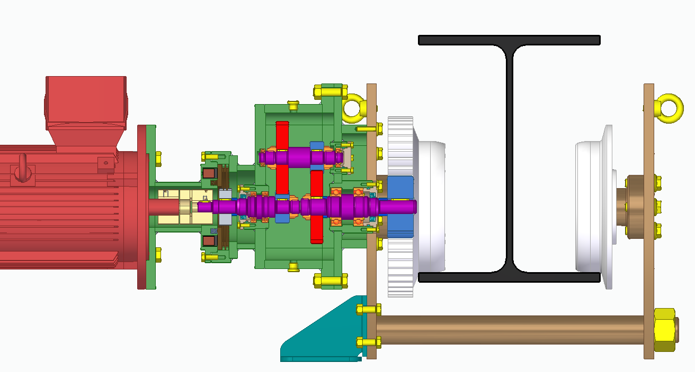
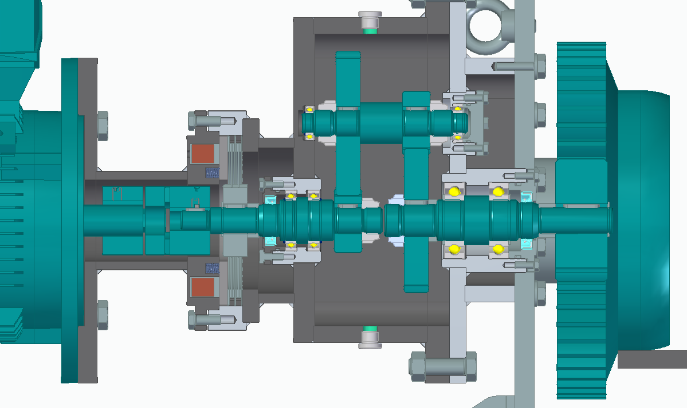

Gearbox design
We designed a gearbox for a crane trolley that runs on a rail, in a team of three. It connects the motor, shafts, gears, bearings, housing and driven wheel.


We designed a gearbox for a crane trolley that runs on a rail, in a team of three. It connects the motor, shafts, gears, bearings, housing and driven wheel.

